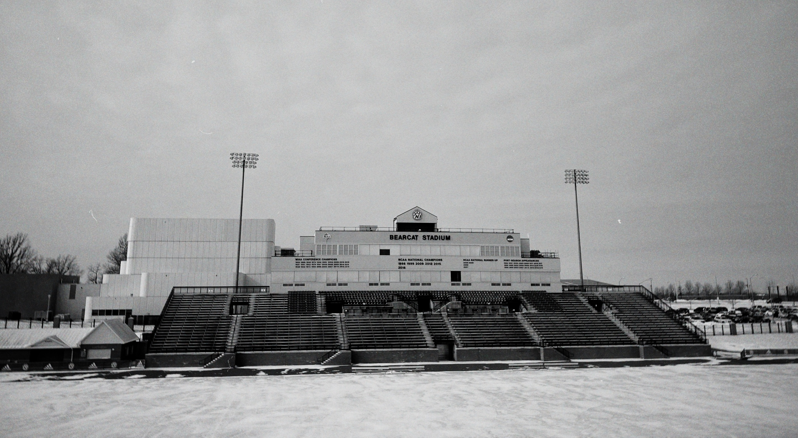
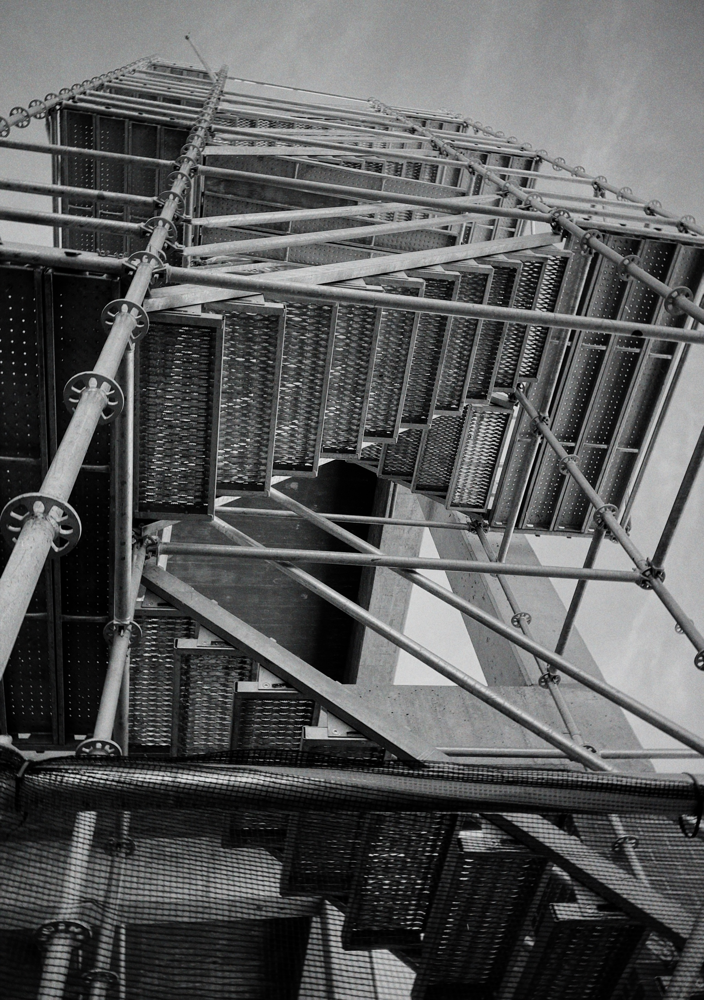
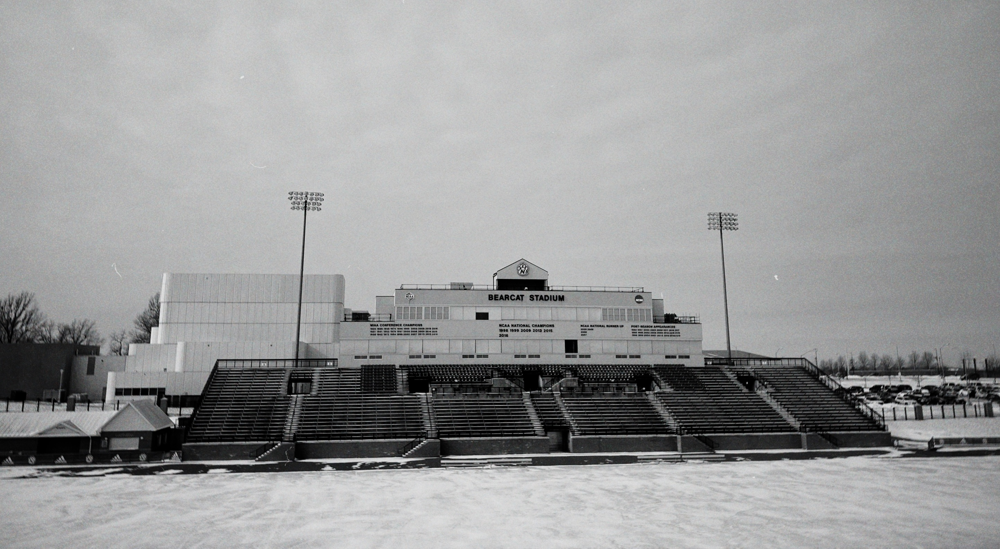
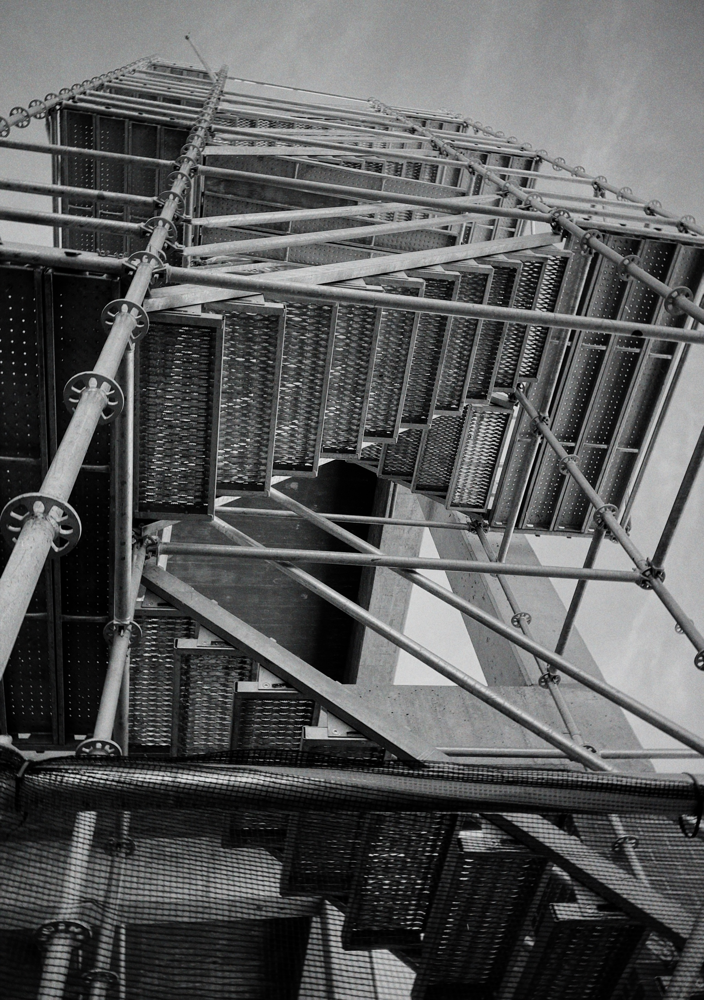

Photography

 



This is my Photography! Through Northwest's photography course I learned an appercriation for photography. These photographs are from a project I call, Empty Spaces. Each of these imgaes I set out to reflect emptiness. I acheived that through images like the glass container and my picture of the Stadium. I wanted a wide shot try to capture the vast space.